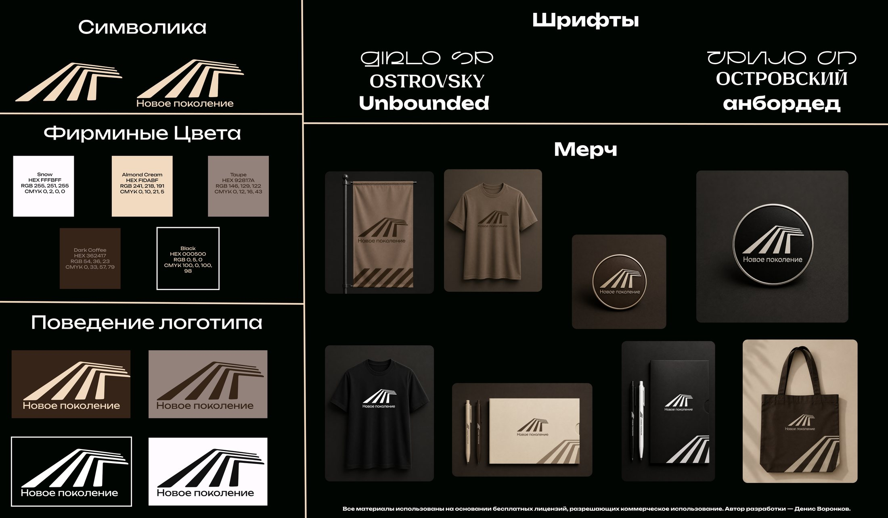
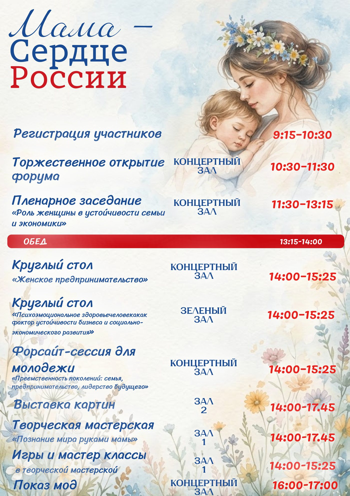
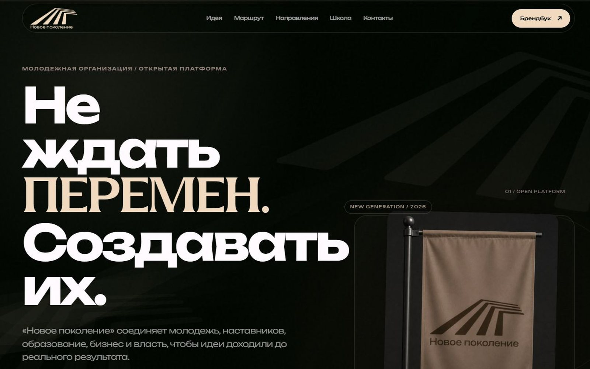
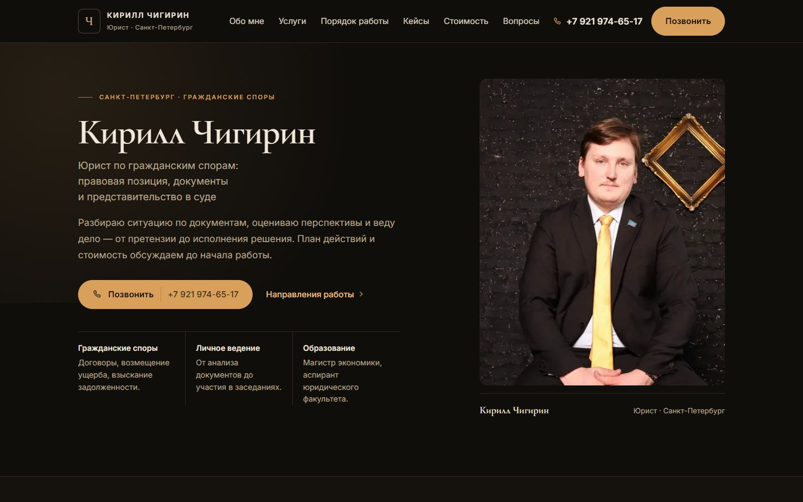
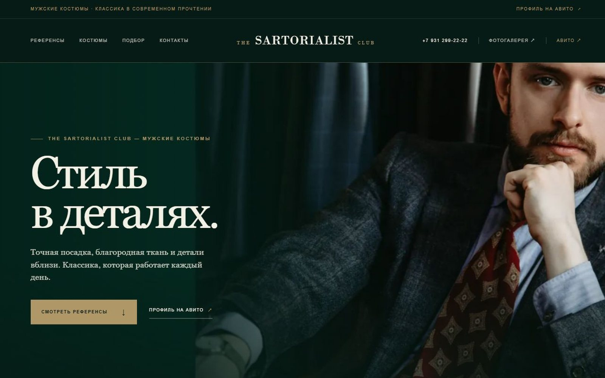

Фирменный стиль «Нового поколения»


Знак в пяти вариантах для разных фонов, палитра с кодами для экрана и печати, шрифты. Собрал всё в руководство по стилю.
Фирменный стиль, программа форума и три сайта в публикации. Любую картинку можно открыть крупнее — нажмите на неё.

Знак в пяти вариантах для разных фонов, палитра с кодами для экрана и печати, шрифты. Собрал всё в руководство по стилю.

Свёрстал программу городского форума: расписание по времени, параллельные залы, блоки и шрифты. Сделал две версии оформления — тёмную и светлую — и довёл до финальных макетов.

Сайт на 8 страниц: собрал структуру, подготовил тексты и вёрстку, выложил на GitHub Pages. Техническую часть делал с помощью нейросетей — задачи, проверку и доработку взял на себя.

Сайт юриста по гражданским спорам: собрал структуру, оформил страницы, сделал кнопки связи. Плюс две правовые страницы — согласие на обработку данных и политика конфиденциальности.

Сайт магазина мужских костюмов: крупная типографика, полноэкранные фотографии и лента референсов с прокруткой. Собрал страницы, настроил ссылки на профиль и фотогалерею.
Ещё один сайт — этот. Он собран вручную: HTML, CSS и немного JavaScript, без сборки и сторонних библиотек.